ﴙ

Home
Repositories
Codeberg Profile
Download GXCapIndicator
Toggle Caps Lock
Settings
About
Quit
Toggle Num Lock
Settings
About
Quit
GXCapIndicator Web Demo
Due to Web limitations, you need to focus the next text entry to see changes in the Virtual indicator
Note: due to website limitations, verification may be inaccurate